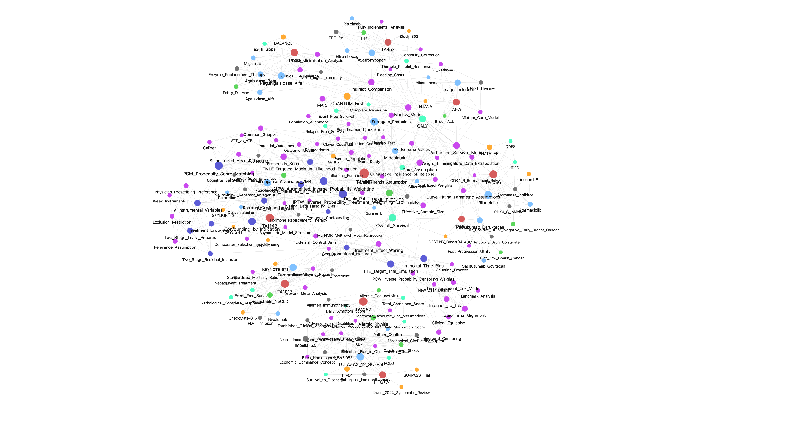
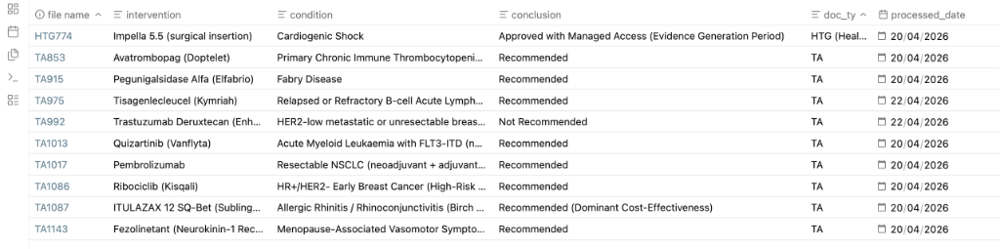

🧠 HTA Methodology Wiki: An LLM-Native Strategic Intelligence Hub
“Knowledge should not be re-derived on every query; it should be compiled into a persistent, compounding codebase.”
[!IMPORTANT] Portfolio Showcase Notice: This directory is a curated static demonstration of the system’s output. It is designed to showcase the methodology, structural logic, and high-fidelity synthesis results. Downloading this folder will not provide a functional “Live Wiki” engine, as the underlying LLM-native automation scripts and full private datasets are not included in this public repository.
🌌 The Knowledge Landscape
Every technical decision in an economic model—from a survival distribution choice to a utility decrement—is a potential battlefield. I visualize these interdependencies through an LLM-augmented Knowledge Graph.

Figure 1: High-dimensional relationship map linking Clinical Endpoints, Statistical Methodologies, and NICE Committee Decision Pillars.🚀 The Philosophy: Knowledge as Code
Unlike traditional RAG (Retrieval-Augmented Generation) systems that “rediscover” knowledge from scratch every time, this Wiki functions as a Compounding Artifact.
- Persistent Synthesis: Every new NICE case ingested doesn’t just add a file; it updates and refines existing “Atomic Nodes” (Drugs, Methods, HTA Concepts).
- The LLM as Maintainer: Following a rigorous Source Fidelity Protocol, the LLM acts as a “compression and cross-referencing engine,” ensuring every claim is traceable back to official NICE/ERG documentation.
- Obsidian as IDE: The folder structure serves as the codebase, while markdown provides the transparency needed for forensic HEOR auditing.
📂 System Architecture: Atomic Node Design
The Wiki is built on the principle of “One Concept = One Node”. This prevents information silos and enables cross-case pattern recognition.
1. Case Audit Storyboards
Forensic Reconstruction: Detailed 3-way reconciliation tables comparing Company Submissions vs. ERG/EAG Critiques vs. Final Committee Resolutions.

Figure 2: Automated case tracker showing the breadth of appraisals ingested (Oncology, Rare Diseases, and Medical Technologies).- Strategic Value: Identifies the specific “breaking points” where committees override manufacturer assumptions.
2. Technical Method Cards
Statistical Rigor: Atomic nodes for methods like IPTW, TMLE, and Recursive Hazard Chaining.
- Innovation: These aren’t just definitions; they record “EAG Challenge Patterns”—the recurring technical objections raised by NICE assessors across different therapeutic areas.
3. Knowledge Automation (DevOps)
Professional Workflow: Maintaining a production-grade knowledge graph requires more than just notes; it requires code.
compile_wiki.py: The core automation engine of the hub. It performs three critical functions:- Incremental Metadata Management: Automatically parses and updates the master HTA mapping table (
notebook_map.md) to track the processing status of every NICE Technology Appraisal. - Change Detection: Scans the
/rawdirectory for source document updates, flagging “Incremental Update Tasks” to ensure the Wiki nodes remain aligned with the latest evidence. - Source Integrity: Ensures every markdown node is properly indexed and traceable to its original TA source, maintaining an audit trail required for HTA submissions.
- Incremental Metadata Management: Automatically parses and updates the master HTA mapping table (
🎯 Strategic Utility: Anticipatory Intelligence
The ultimate goal of this Wiki is to provide Preventive Modelling Guidance. By synthesising the “Committee Judgment Tendencies” across 20+ oncology cases, the system generates pre-submission checklists:
- Pre-empting EAG Challenges: Before a model is built, the Wiki identifies which assumptions (e.g., cure fractions, treatment waning) are most likely to be attacked, based on historical precedents.
- Case-to-Model Bridge: This Wiki provided the methodological foundation for the RRMM Forensic Audit Project, specifically the implementation of the Hazard Chaining algorithm.
🛡️ Operational Standards
- Source Fidelity: Zero-tolerance for AI hallucinations. Every entry includes a
Source Anchorlinking to the raw source text. - NICE Alignment: Fully mapped to DSU TSDs and the 2022 RWE Framework.
Lead Architect: Xiaoge Zhang, PhD (York)
Methodology: LLM-augmented Forensic Auditing
Portfolio Hub: xgzhang.com